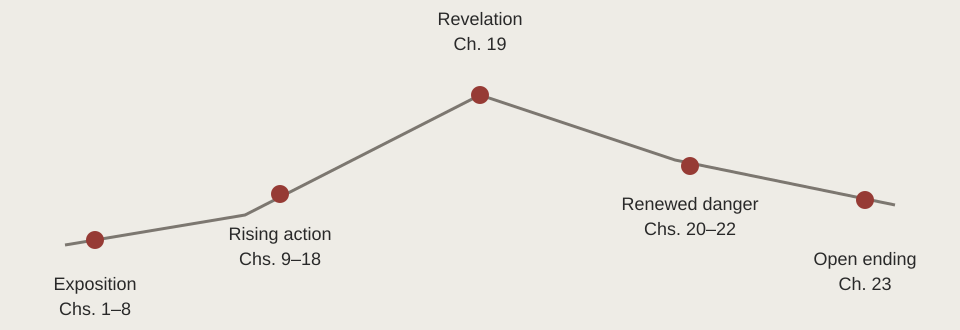

Trace how revelations, choices, and crises create different kinds of turning point.
KEY IDEA
A turning point depends on the conflict you trace.
Compare a revelation, a decisive choice, and a physical crisis before defending your plot map.
Words to know before you read
Climax
A decisive turning point in the main conflict.
Ambiguity
More than one interpretation remains supported by the evidence.
On this page
Read structure as an interpretation
A plot diagram selects turning points; it does not prove that a novel develops in one smooth triangle. Name the conflict you are tracing and explain how each stage changes the pressure on it. The full-novel lesson below distinguishes a revelation, a decision, and a physical crisis.
Full-novel analysis is hidden. Choose “Full novel” above when you are ready. Chapter-by-chapter notes remain available in the reading guide.
Evidence note: Novel events below are paraphrased. Chapter numbers locate the relevant events; use page numbers from your own edition in formal MLA writing. Interpretations are arguments to test, not verified statements of authorial intention.
Interactive plot guide

Original conceptual diagramOne defensible interpretation uses Chapter 19 as the climax. The renewed survival danger means the rest does not descend in one simple curve.Original HuskyDaddy diagram · credits
Expand each stage for its function, evidence, and contribution to the argument.
1 · Exposition: belonging before questioning · Chapters 1–8
Exposition establishes a character’s normal world, important relationships, and the pressures that will make change matter. Here, normality is organized rather than chaotic: meals, feelings, volunteering, age groups, and future work all have procedures. Jonas’s concern in Chapters 1–2 is whether the adults will choose a suitable Assignment for him.
That starting point matters because his later resistance is not a fixed personality trait. Readers first meet someone who takes communal expectations seriously and seeks reassurance within them.
The Ceremony of Twelve brings these arrangements together publicly. Being skipped in Chapter 7 exposes how strongly Jonas depends on recognized belonging; being selected in Chapter 8 gives him distinction without explaining its costs. Exposition therefore does more than supply background. It establishes the trust that later knowledge will test and the emotional security Jonas risks losing when familiar rules stop making sense.
2 · Rising action: each discovery changes the next question · Chapters 9–18
Rising action develops complications that increase pressure on the central conflict. The permission to lie in Chapter 9 is an early complication because Jonas cannot reconcile it with the rule he believed everyone shared. The Annex then gives physical form to unequal knowledge. Memories introduce colour, pleasure, pain, grief, and love, making Sameness look less like an obvious condition of life and more like a set of decisions with costs.
The sequence develops Jonas rather than simply adding information. In Chapter 13, he wants choice but still repeats the fear of wrong choices. By Chapter 17, memories make familiar recreation painful, separating him from friends.
Rosemary’s history in Chapter 18 establishes that private experience can return to the wider community. The conflict thus grows from personal uncertainty into a question about whether collective comfort depends on keeping other people’s understanding limited.
3 · Preferred climax: a revelation that makes obedience intolerable · Chapter 19
A climax is the decisive turning point in the conflict an interpretation treats as central. Chapter 19 is the strongest choice if that conflict is Jonas’s changing relationship to the moral authority of his community. Watching Father kill the smaller twin does not merely add another unpleasant fact. It changes what release means and makes a trusted caregiver’s ordinary conduct impossible for Jonas to accept as harmless.
This is a revelation rather than the actual escape. Its structural force lies in making the previous position untenable: Jonas cannot return to uncomplicated obedience after recognizing the killing. Earlier discoveries exposed losses; this one exposes an immediate form of institutional harm.
Limited narration lets readers experience that break alongside him. The claim is defensible without pretending that every novel must contain one universally agreed point of maximum excitement.
Falling action follows the consequences of a turning point. In Chapter 20, the revelation produces grief, refusal to return home, and a plan for change. The Giver’s decision to remain also turns knowledge into responsibility for others. However, describing all subsequent events as a steadily descending action line would be misleading: learning of Gabriel’s imminent release in Chapter 21 creates a new deadline and a dangerous, unprepared departure.
Chapter 21 is therefore a plausible alternative climax if the central question is whether Jonas will act against society rather than whether he will recognize its wrongdoing. Chapter 23 supplies a final physical crisis: can he carry Gabriel over the hill? Distinguish these functions.
Revelation, decisive choice, and greatest bodily danger need not occur together. A thoughtful plot argument identifies which conflict it follows and explains why its chosen turning point transforms that conflict.
5 · Resolution: moral direction without a confirmed destination · Chapter 23
Resolution shows the condition left by the action, but it need not answer every question. Jonas continues protecting Gabriel after food, strength, and familiar control have diminished. His values are clearer than his future.
The story ends through his perceptions of a sled, lights, and music rather than through an external report of rescue or a return to the community. We cannot state as fact that the community has successfully changed.
One defensible reading treats the final perceptions as arrival: the lights and music suggest a place where the human connections Jonas has learned to value might exist. Another treats them as memories, visions, or perceptions shaped by exhaustion and cold; that reading leaves survival doubtful. On the second reading, he may be dying rather than reaching a real refuge; that outcome is not confirmed either.
The recurring sled and remembered warmth support meaningful connections but do not independently prove either account. The ambiguity belongs to this novel. Film events and information from sequels answer different questions and should not replace analysis of its ending.
Completed plot map
Read across to compare; use stacked rows for a closer view.
Stage
Events
Jonas’s development
Central pressure
Exposition · Chs. 1–8
Routines, observations, ceremonies, selection
Wants to belong and trust a suitable future.
Personal identity is defined by shared procedures.
Knowledge makes unquestioning participation difficult.
Preferred climax · Ch. 19
Events
Release recording
Jonas’s development
Recognizes harm in a trusted person’s conduct.
Central pressure
Official approval no longer secures moral trust.
Consequences / renewed crisis · Chs. 20–22
Events
Plan, early departure, survival needs
Jonas’s development
Acts and accepts continuing care obligations.
Central pressure
Resisting harm creates risks that require practical judgement.
Open resolution · Ch. 23
Events
Hill, sled, lights, music
Jonas’s development
Persists in care without certainty.
Central pressure
Moral direction is clearer than physical outcome.
Apply the distinction
Discuss: which question does Chapter 19 answer, which choice does Chapter 21 settle, and what remains unknown after Chapter 23?
Paragraph task: defend one climax. Compare it with a plausible alternative, explaining why your choice best answers the central conflict you have identified.